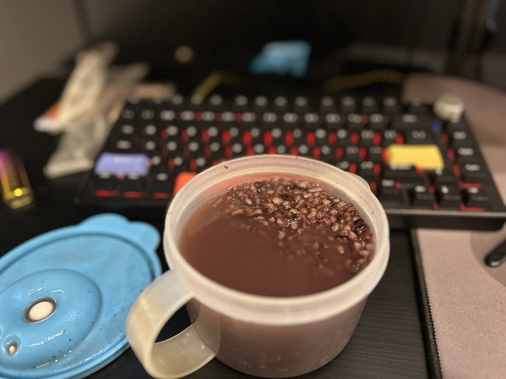
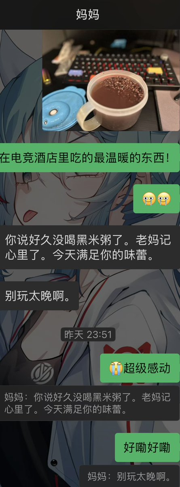

青石巷🍀🕊️
@qingshixiang258
@mikulovermua 啊，我看到这种就会死


激推诺谛卡的葱娘酱🇨🇳🏳️🌈😾
@mikulovermua
电竞酒店最好吃的东西不是别的，是妈妈大晚上专门为我熬的黑米杂粮汤！
妈妈记得我前两天想喝黑米汤，当时煮好了汤才发现，里面的糯米已经过了保质期（最后只能喂楼顶的老母鸡了😇），没喝成我很难受😣，妈妈没给我讲但是她记着的😭❤️。
或许我真的是母亲宠爱下最幸福的小羊🥺。 https://t.co/dkQUAnkWUt